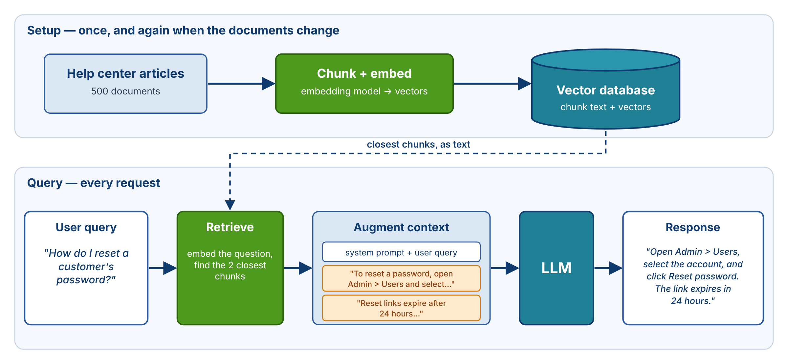
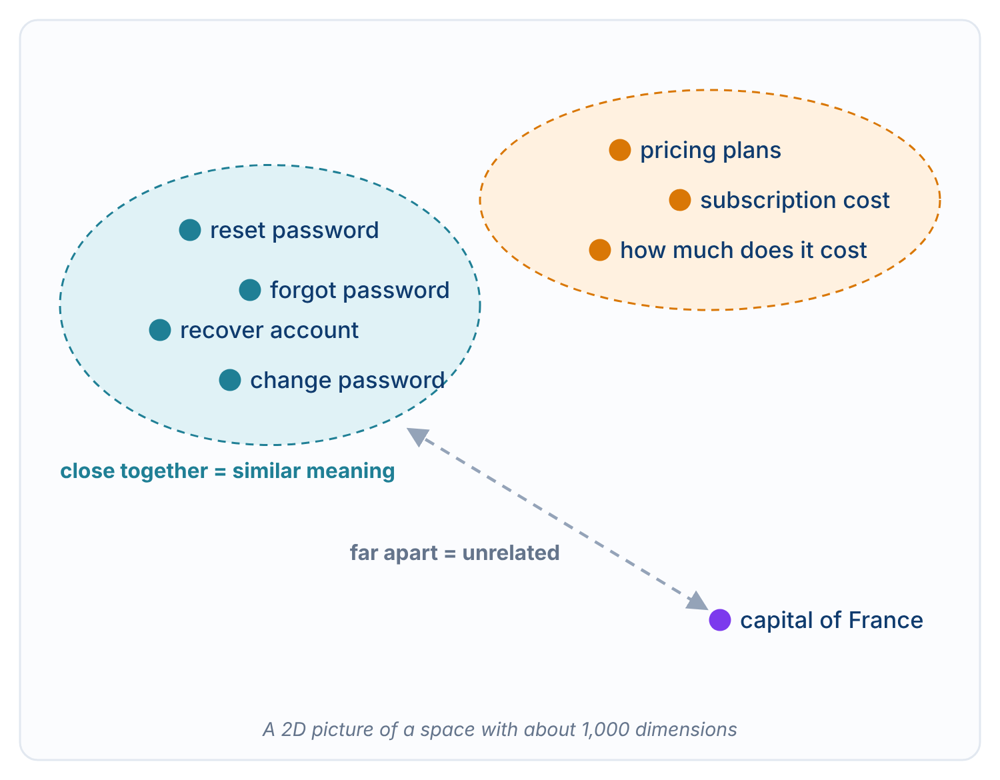
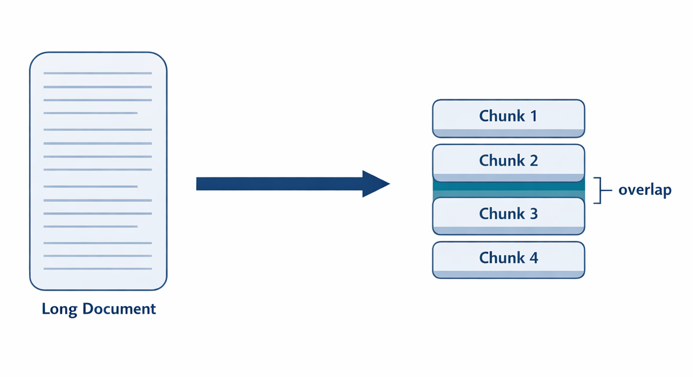
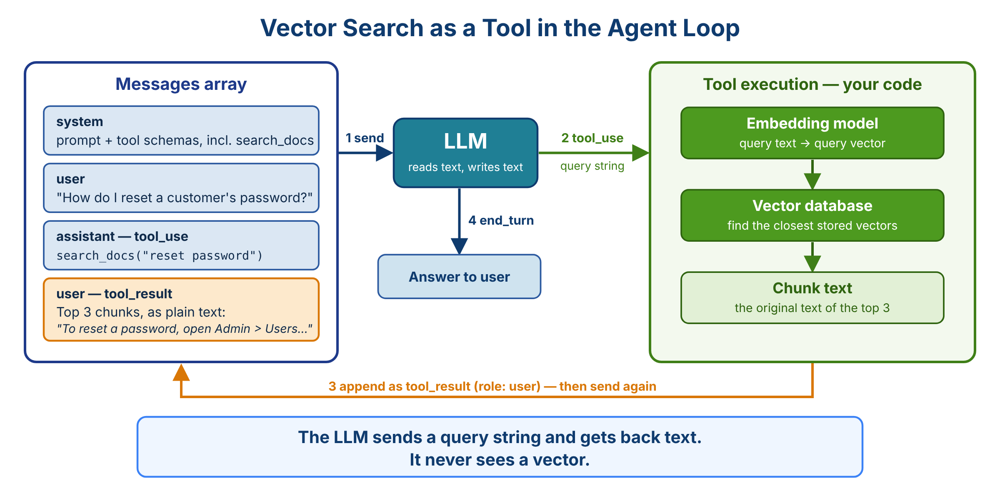

Lecture 8.1 defined RAG as a category: any mechanism that retrieves information and adds it to the model's context. This lecture covers the most common implementation, vector search, because it dominates production RAG systems and appears in nearly every discussion of LLM applications. The pieces are embeddings, which turn text into vectors; similarity, which compares vectors; vector databases, which store and search vectors at scale; and chunking, which prepares documents for embedding.
The goal is to place vector search inside the agents this course builds. Vector databases are a separate technology with their own theory, and they predate LLMs. Because the two share some underlying ideas, they are often discussed as one thing. They are not, and the internals of a vector database are a subject for another course. What an agent engineer needs is a clear picture of what each piece does, where it sits in the pipeline, and when the approach fits.
Consider a company with a large customer support knowledge base: hundreds of help articles, product manuals, and years of support transcripts. That knowledge is private, so it is not in any model's training data. Fine-tuning a model on it is possible but rarely practical, as Lecture 8.1 discussed. The practical goal is to take a customer's question, find the pieces of the knowledge base that answer it, and put those pieces in the model's context.
The difficulty is that both sides are unstructured. The knowledge base is loose prose. The customer's question is plain language, such as "How do I reset my password?" or "I'm locked out of my account," not a database query. Finding the right passages for an arbitrary question requires comparing what the question means with what each passage means. Vector search does this by encoding the meaning of each passage and of the question as vectors, then finding the passages whose vectors are closest to the question's.
The pipeline is the one from Lecture 8.1, with a vector database as the searchable source.

In the setup phase, done once and repeated when the documents change, each article is split into chunks, each chunk is passed through an embedding model to produce a vector, and the vectors are stored in the database alongside their original text.
In the query phase, the user's question is passed through the same embedding model. The database finds the stored vectors closest to the question's vector and returns the text of those chunks. That text is added to the context, and the model generates an answer grounded in it. This is the retrieve-first wiring from Lecture 8.1. The same search can also run as a tool, which is covered near the end of this lecture. The rest of the lecture explains each box in the diagram.
An embedding is a list of numbers that represents the meaning of a piece of text. The term appears in two different settings, which causes confusion.
The idea is the same and the technology is related, but the models and their jobs are different. RAG uses the second kind. An embedding model does not generate text; it only maps text to a vector. The LLM generates; the embedding model represents. For the same reason, an LLM is not the right tool for producing embeddings. Dedicated embedding models are cheaper, faster, and built specifically for comparison.
An embedding model takes text in and returns a fixed-length vector:
"How do I reset my password?" → [0.024, -0.183, 0.412, 0.091, ..., -0.057]
(1,024 numbers)
Current models produce vectors of roughly 768 to 3,072 dimensions. Each dimension is a feature the model learned during training, and together they encode meaning. The individual numbers are not interpretable. What matters is the relationship between vectors: texts with similar meanings produce vectors that are close to each other.
A useful way to picture this is a map of everything text can be about. An embedding assigns each piece of text a position on that map. The map has hundreds or thousands of dimensions rather than two or three, so it cannot be visualized directly, but the principle is the same as on a street map: things that are about the same subject are located near each other.
Embedding models are trained with contrastive objectives. The training data contains pairs of texts that should be similar, such as a question and its answer or two paraphrases of the same sentence, and pairs that should not. Training pushes the vectors of similar pairs closer together and the vectors of unrelated pairs farther apart. The result is a model whose vectors preserve semantic similarity: closeness in the vector space tracks closeness in meaning.
Every piece of text becomes a point in the embedding space, and points cluster by meaning.

"How do I reset my password?" and "I forgot my password, how can I recover it?" land near each other. "How do I reset my password?" and "What is the capital of France?" land far apart. Real embeddings have around a thousand dimensions; the two-dimensional picture is a projection that keeps the clustering.
Retrieval follows directly from this picture: embed the user's query, find the stored vectors closest to the query vector, and return the text they came from.
Closeness between two vectors is usually measured with cosine similarity, which measures the angle between them:
cos_sim(a, b) = (a · b) / (‖a‖ × ‖b‖)
It is the dot product of the two vectors divided by the product of their lengths. The result ranges from 1 (same direction, most similar) through 0 (unrelated) to -1 (opposite direction, which is rare for embeddings in practice).
Cosine similarity is the standard measure for two reasons. It ignores vector length and depends only on direction, so a short passage and a long passage on the same topic can score as similar. And it is cheap: if every vector is normalized to length 1, the denominator is 1 and cosine similarity is simply the dot product. Many embedding APIs return vectors that are already normalized, so in practice cosine similarity and dot product are interchangeable for them. Use the dot product when vectors are normalized and the full cosine formula when they are not. Embedding libraries and vector databases compute this for you.
Keyword search matches words. It fails when the query and the document use different words for the same idea:
Query: "Password reset" Document title: "Recovering account access" Keyword match: none
Techniques such as word stemming help at the margins, but a keyword search for "password reset" still needs the document to mention passwords. Embedding search compares meaning instead of words. Both the query and the document are mapped to vectors based on what they mean, so "I'm locked out of my account" can retrieve an article about password resets without sharing a single word with it.
This matters most in exactly the canonical use case. The developer controls neither what users type nor how the knowledge base was written. Handling paraphrases and synonyms is the practical reason embeddings dominate retrieval over unstructured text.
Most production systems use a hosted embedding model. The API call is simple: send text, receive a vector.
text-embedding-3-small (1,536 dimensions) and text-embedding-3-large (3,072 dimensions).Open-source embedding models are also widely available and can run locally. Hosted embeddings cost roughly $0.02 to $0.13 per million tokens, far less than generating text with an LLM, because embedding models are small.
Larger vectors tend to capture more nuance but cost more to store and search. Many current models let you shorten a vector by keeping only its first dimensions, trading some quality for storage. Start with the model's default size and change it only to fix a measured problem.
Each embedding model builds its own map of meaning. Two models place the same concept at different coordinates, so a vector from one model cannot be compared with a vector from another. They do not share a coordinate system.
Two rules follow. The corpus and the queries must be embedded with the same model. And the choice of model is sticky: switching models means re-embedding the entire corpus. Pick a model that fits your domain and budget, and keep it until you have a clear reason to change.
For a small corpus, a vector store can be a Python dictionary that maps each chunk's text to its vector. Search is a linear scan: score the query vector against every stored vector, sort, and take the top k.
import numpy as np
def search(query_vec, store, k=3):
"""store maps chunk text -> unit-length vector."""
scores = {text: float(np.dot(query_vec, vec)) for text, vec in store.items()}
return sorted(scores, key=scores.get, reverse=True)[:k]
For a few hundred or a thousand chunks this is fast, simple, and easy to debug. A linear scan does not scale, however. With millions of vectors, every query must touch every vector, and search becomes too slow.
A vector database stores each vector with its original text and finds the vectors closest to a query. Common choices are ChromaDB, which runs locally with no infrastructure; FAISS, a fast library from Meta with no server; Pinecone, a managed service; and pgvector, an extension that adds vector search to PostgreSQL. They add three things a dictionary does not:
Vector databases also make updates straightforward. Each chunk has an ID, so when a document changes, you delete its old chunks and add the new ones without re-embedding the rest of the corpus. A dictionary can do the same thing by hand.
A vector database knows nothing about LLMs. It is a search index for vectors that returns stored text. It never communicates with the model.
Use a dictionary while prototyping, for corpora under about a thousand chunks, and when nothing needs to persist between runs. Move to a vector database when the corpus grows to thousands of chunks or more, when the index must persist, or when searches need metadata filters. A common path is to prove that retrieval works with a dictionary first, then switch when scale or persistence requires it.
Documents are usually too large to embed as a single vector. Embedding models accept limited input, and even within that limit, a single vector for a 50-page PDF averages everything in the document. The result matches poorly against any specific question. The more text a vector represents, the more topics it blends together.
Chunking splits each document into smaller units, and each chunk is embedded separately. Retrieval then returns matching chunks rather than whole documents. This serves two purposes:

| Strategy | How | Best for |
|---|---|---|
| Fixed-size | Split every N tokens (~500-1,000) | Uniform corpora; the simplest to implement |
| Sentence/paragraph | Split on natural boundaries | Prose and documentation |
| Semantic | Split where the topic changes | Long-form content with clear topic shifts |
Semantic chunking detects topic changes with embeddings or with an LLM, another case of using the same technology to prepare data for itself.
Adjacent chunks usually overlap by 10 to 20 percent of their length. Overlap keeps an answer that falls near a boundary from being split across two chunks, neither of which contains all of it.
Chunk size is a tradeoff. Larger chunks carry more context, so each retrieved chunk is more likely to be self-contained. Smaller chunks are more precise and use less of the context window. The symptoms show which way to adjust. If the model receives a chunk and still cannot answer because the chunk lacks surrounding context, the chunks may be too small. If retrieved chunks are mostly irrelevant material around a small useful part, they may be too large.
Chunking is the part of vector RAG that is most often over-engineered. Start with the default settings of an established text-splitting library, and tune chunking only after you observe a retrieval problem you can attribute to it. Weak embeddings, missing reranking, and poorly phrased queries are more common causes of bad retrieval than chunk boundaries.
The pipeline at the start of this lecture runs the search before the model is called. As Lecture 8.1 described, the same search can instead be a tool that the model calls from inside the agent loop of Lecture 6.1.

search_docs tool.tool_use request, search_docs("reset password"), writing its own query string.tool_result. The loop sends the messages again.The model never sees a vector, and it does not need to know a vector database exists. To the model, search_docs looks the same as read_file: a tool call goes out and text comes back. Embedding and similarity search happen entirely in the developer's code, on the other side of the tool call.
Neither wiring is the correct one. Searching first is simple and predictable. A tool lets the model decide when to search and write a better query than the user's original wording. Many systems do both: they search first to seed the context and keep the tool available so the model can search again if the first results miss.
Vector RAG fits well when:
It fits poorly when:
Vector search also has a cost. Every query runs the embedding model and a similarity search, which makes it slower and heavier than a keyword search over the same text. The poor-fit cases above are where the other retrieval mechanisms of Lecture 8.3 do better.
Embeddings represent meaning as vectors. LLMs use embeddings internally, but RAG uses a separate, smaller embedding model that turns a passage into one vector. Similar meanings produce similar vectors, so retrieval embeds the query and finds the closest stored vectors, scored by cosine similarity, a normalized dot product. Embedding models are sticky: the corpus and queries must use the same model, and switching means re-embedding everything. Vector databases add ANN indexing, persistence, and metadata filtering; a dictionary is enough until scale or persistence demands more, and the database itself knows nothing about LLMs. Chunking gives retrieval its granularity and keeps results within the context window; library defaults are a sound starting point. Vector search can run before the model call or as a tool, and in both cases the LLM never sees a vector: retrieval returns text, and that text goes into the context.